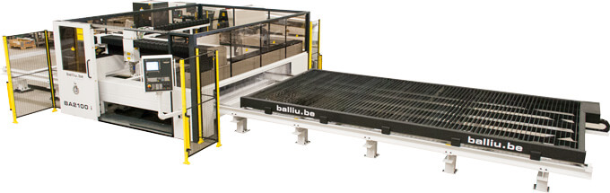

Разработка и производство автоматизированных установок лазерной резки, сварки и наплавки под individualные задачи заказчика.
Установки лазерной резки, изготовленные под заказ
Линия лазерной резки серии LD для работы с рулонным металлом
Эта изготовленная на заказ автоматизированная линия предназначена для непрерывной высокоскоростной резки тонких дисков напрямую из рулона. Полученные заготовки используются для формирования многослойного двойного дна посуды (кастрюль). Комплекс рассчитан на режим работы 24/7. Оперативное вмешательство персонала требуется исключительно для плановой замены рулона металла и опорожнения контейнера с ломом.

Компактный лазерный раскройщик Compact LD1250c
LD1250c — это специальная оптимизированная версия модели LD1250PS, поставляемая без громоздкой автоматической системы смены столов. Металлические листы вручную помещаются на рабочий стол, который плавно выдвигается из зоны обработки через фронтальную дверь. Максимальный габарит заготовки составляет 1250 x 1250 мм.
Ключевое преимущество комплекса — экстремальная компактность: станок вместе с лазерным источником занимает площадь всего 4 х 5 кв.м. При этом установленный лазер мощностью 2 кВт позволяет уверенно кроить конструкционную сталь толщиной до 15 мм. По запросу возможна комплектация более мощными излучателями.

BA2000i — специализированная установка лазерной резки дерева
Комплекс BA2000i спроектирован специально для эффективного раскроя крупноформатных деревянных и фанерных листов размером до 6 х 3 метра. При этом рабочая зона резания оптимизирована до компактных 2 х 3 метра: деревянный лист автоматически подается в зону обработки роботом-протяжчиком с фиксированным шагом в 2 метра.
Станок оборудован уникальной промышленной многозонной системой локальной вытяжки, которая обеспечивает безупречное удаление всех продуктов горения, смол и паров, сохраняя оптику и направляющие в идеальной чистоте.
Проектирование лазерного оборудования любой сложности
Мы готовы разработать, поставить и взять на долгосрочное сервисное обслуживание любые специализированные станки для лазерной резки, роботизированной сварки, лазерной наплавки и термообработки под уникальные стандарты вашего производства.